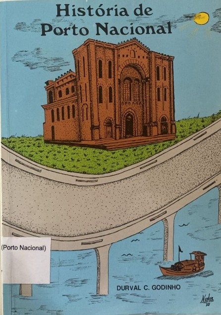

<style>
    section {
        display: flex;
        flex-direction: row;
        align-items: center;
        justify-content: center;
        gap: 40px;
        margin: 40px 0;
    }


    .conteudo {
        max-width: 1000px;
        font-family: Arial, sans-serif;
        font-size: 16px;
        line-height: 1.6;
        color: #333;
        text-align: justify;
    }

    .conteudo p {

        margin-bottom: 16px;
    }

    img {
        width: 300px;
        height: auto;
        border-radius: 8px;
    }
</style>
<section>
    <div class="conteudo">
        <h3>Breve História do Tocantins e de sua Gente: Uma Luta Secular</h3>
        <h5>Otávio Barros da Silva</h5>
        <p>O livro Breve História do Tocantins e de sua Gente – Uma Luta Secular, de Otávio Barros da Silva, apresenta
            uma ampla pesquisa sobre a formação histórica do Tocantins, desde a ocupação territorial até os movimentos
            que, ao longo de mais de 180 anos, culminaram na criação do Estado. A obra resgata personalidades,
            tradições, aspectos antropológicos, linguísticos e socioeconômicos que marcaram a identidade tocantinense.
            A estrutura do livro percorre diferentes fases: os tempos coloniais, com destaque para as Entradas e
            Bandeiras; a Comarca do Norte de Goiás; a herança histórica da região; a Província da Palma; os movimentos
            políticos modernos e a criação do Estado; finalizando com uma reflexão sobre o Tocantins no século XXI.
        </p>

        <h3>História de Porto Nacional</h3>
        <h5>Duval Godinho</h5>

        <p>O livro História de Porto Nacional, de Durval Godinho, apresenta um amplo panorama sobre a formação e o
            desenvolvimento da cidade. A obra aborda desde a fundação do Arraial do Pontal, liderada pelo barqueiro
            português Félix Camoa, até a evolução política, social, econômica e religiosa de Porto Nacional.
            Entre os temas tratados estão o primeiro levantamento estatístico, a administração pública, a criação da
            Diocese, a vida forense, o serviço de correios e a atuação da imprensa e dos clubes sociais. O autor também
            destaca intendentes e prefeitos de 1891 a 1986, a navegação nos rios Tocantins e Araguaia, a construção da
            Catedral e a atuação de Dom Alano. Além disso, registra fatos marcantes como a passagem da Coluna Prestes e
            homenageia cidadãos que contribuíram para o crescimento da cidade. A pesquisa baseou-se em vasta
            documentação histórica, incluindo cartórios, arquivos e periódicos da época.
        </p>

        <div class="imagem">
            
            
        </div>
    </div>
</section>